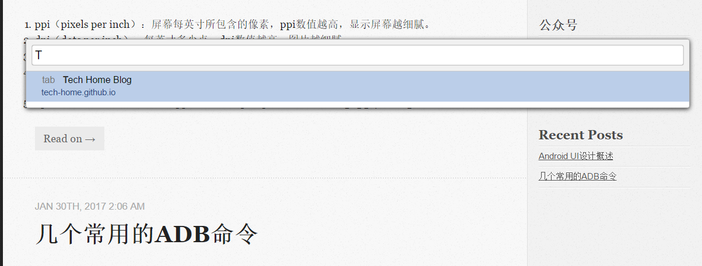
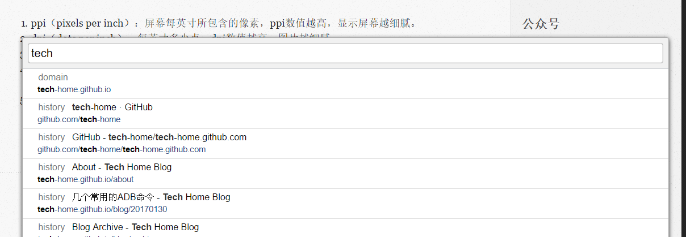
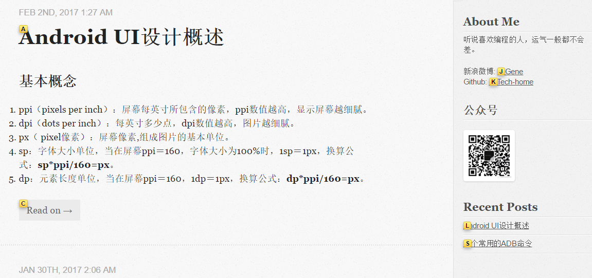

如果你是vim重度患者；
如果你是chrome狂热爱好者；
那么不妨尝试一下Vimium这个神器，想象一下，再也不用移动鼠标去滑动或者点开某个链接，手指不用离开键盘，一切都将会是多么的美好。熟悉chrome的童鞋都应该知道，它本身就自带了一些快捷入口，如ctr+t新建标签页，但还是存在许多不足的地方，vimium的出现正好填补了这些缺陷，它简单易用，更是十分的强大。在这，我来总结一下一些常用的快捷键。
页面滑动
- h :向左滑动
- l：向右滑动
- j：向下滑动
- k：向上滑动
- gg：跳转到页面最底部
- G：跳转到页面最底部
- d：向下翻一屏
- u：向上翻一屏
标签新建、切换、关闭
- J：上一个标签页
- K：下一个标签页
- x：关闭当前页面
- X：恢复刚刚关闭的页面
- t：新建标签页
快速检索
有时打开的页面太多，我们自己也不知道某个标签的具体位置，vimium给我们提供了非常快速查找标签的方法
- T：输入关键字，切换到已打开的tab页

有没有这种情况，有的页面是你几天前浏览过的，或者是你收藏过的，但是由于收藏的东西过多过杂，这时想要找到这个几天前浏览的页面会变得十分困难。然而，这些问题用vimium都可以十分简单的解决
- O：创建新的标签，并打开对应的链接
- o：在当前的标签，打开对应链接

- /：在当前页面筛选符合的文字
.按n跳转到下一个
.按N跳转到上一个 - B：创建新的标签，并打开对应的书签
- b：在当前的标签，打开对应书签
快速跳转
以前，我们看到页面的某个链接地址，需要先复制、再新建标签页，然后在输入栏粘贴地址，最后按enter跳转，十分繁琐，现在，我们只需要复制链接地址，单击以下按钮，就可以随意跳转到对应链接
- P：创建新的标签，并打开对应的链接
- p：在当前的标签，打开对应链接
- yy：复制当前页面的url地址
炸裂式跳转
快速跳转已经是个很便捷的打开链接的方式，但是，仍需要我们进行复制一下地址的操作。那么，有没有更加便捷的方式呢？可以不用手动的去拷贝链接，直接可以跳转到我们想去的地址。答案是有的，那就是接下来说的炸裂式跳转。单击f，当前页面的所有可链接元素都会分裂成一小块一小块的格子，我们只需要输入每个格子上的字母，便可以跳转。

- f：在当前的标签，打开对应链接
- F：创建新的标签，并打开对应的链接
其他
- gs：查看页面源代码。
- gu：跳转到父页面
- yf：拷贝某一个URL到剪贴板
- gi：将光标定位到输入框，如果有多个可以按Tab键切换